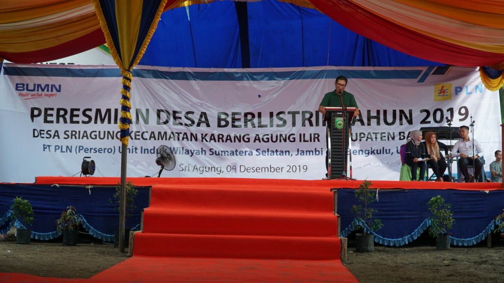

Berita
PLN Berhasil Listriki 16 Desa di Kecamatan Karang
Agung Ilir, Kabupaten Banyuasin
Bagikan : facebook || twitter
Siaran pers || 13 Dec 2019

Banyuasin, 5 Desember 2019 – PLN Berhasil
Menembus Kecamatan Karang Agung Ilir Kabupaten Banyuasin dan melistriki sedikitnya 6000-an warga di Kecamatan tersebut.
masuknya aliran listrik PLN, ditandai dengan Acara Peresmian Desa Berlistrik di Desa Sri Agung Kecamatan Karang Agung Ilir, Kabupaten Banyuasin.
Hadir pada acara tersebut, Gubernur Sumatera Selatan, Herman Deru, Bupati Banyuasin Askolani, beserta para jajaran kepala dinas di lingkungan pemerintah daerah, Direktur Regional Sumatera PLN Wiluyo Kusdwiharto, Eksekutif Vice President Pengembangan Regional Sumatera Budi Pangestu, GM PLN UIW S2JB, Daryono, dan GM PLN UIP Sumbagsel, Dendi Kusumawardana serta para pejabat PLN.
Dalam sambutannya, Gubernur Sumatera Selatan, Herman Deru menyampaikan ucapan terima kasih dan apresiasi atas kerja keras yang telah dilakukan oleh PLN dalam melistriki seluruh wilayah Sumsel. Dirinya juga menyampaikan bahwa pemerintah Provinsi Sumatera Selatan siap memberikan support demi pencapaian Rasio Elektrifikasi 100 persen. “Kita berharap pembangunan kelistrikan terus dilakukan sehingga seluruh masyarakat Sumsel dapat menikmati aliran listrik “, ucapnya.
Gubernur Sumsel tersebut juga menyampaikan kepada masyarakat agar ikut serta menjaga aset dan peralatan listrik yang sudah terpasang di desa. “Kalau ada pohon, ranting yang mengangu cepat-cepat dilaporkan ke PLN, supaya segera ditindaklanjuti”, kata Deru.
Pada kesempatan yang sama, Direktur Bisnis PT. PLN (Persero) Regional Sumatera, Wiluyo Kusdwiharto menyampaikan saat ini kondisi kelistrikan di Sumatera Selatan sangat cukup. PLN memiliki Reserve Margin sebesar 12 persen atau sebesar 666 megawatt. “Dengan kondisi kelistrikan yang sangat cukup di Sumsel, pemerintah daerah silahkan membangun daerahnya dan berapaun kebutuhan listrik di Sumsel, kami siap,” ungkap Wiluyo.
Menurut Wiluyo, tidak salah jika Sumatera Selatan dijuluki lumbung energi, terbukti dari kapasitas listrik yang tersedia di Sumsel cukup besar. Bahkan kata dia, saking besarnya listrik dari Sumsel dialirkan mulai dari Lampung sampai ke Medan hingga ke Aceh.
“Tol listrik sebesar 275 kilovolt dari Lahat dialirkan ke Sumatera Utara, Lampung bahkan hingga Aceh,” kata dia.
“Bahkan dalam waktu yang tak lama, PLN akan membangun saluran kabel laut menyeberangi Selat Bangka. “Mohon doa dan dukungan, kita akan menyambungkan listrik dari Sumsel ke Bangka dan bahkan rencananya hingga Belitung”, ujarnya.
Sementara itu, Bupati Banyuasin Askolani, sangat senang atas dilistrikinya desa-desa di Kecamatan Karang Agung Ilir. “Terima kasih banyak kepada Bapak Gubernur dan PLN atas usahanya menerangi desa-desa kami, semoga bisa menstimulasi tumbuhnya ekonomi kemasyarakatan, karena banyak sekali potensi usaha yang bisa dilakukan dengan kehadiran listrik ini,” kata Askolani.
Hadirnya listrik ini telah menjadi suatu hal yang dinanti-nantikan oleh warga yang sebagian besar berprofesi sebagai petani. Masuknya listrik ini merupakan puncak dari pelaksanaan pembangunan listrik di 16 desa, dimana 11 desa merupakan pekerjaan yang sudah dimulai sejak 2018 dan 5 desa yang dikerjakan di Tahun 2019.
Copyright©2020 PT. PLN (Persero) UPB Sumbagsel